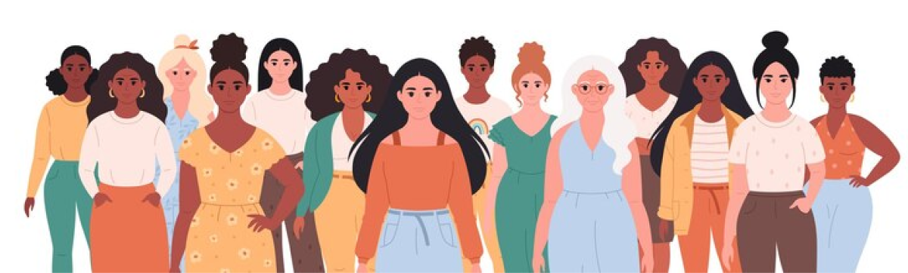

Nuestra historia
Somos una asociación feminista que defiende la libertad de las mujeres.

Quiénes somos
Impulsamos acompañamiento, educación y cambio social.
Vidas Libres es una asociación orientada a la defensa de los derechos de las mujeres, la prevención de la violencia de género y la promoción de relaciones basadas en el respeto, la igualdad y la autonomía.
Creemos que nadie debe vivir en silencio por miedo. Por eso, trabajamos desde la escucha, la información y la acción para acompañar a quienes atraviesan situaciones de violencia o vulnerabilidad, y para sensibilizar a la comunidad sobre la importancia de la prevención.
- 1 Acompañamiento emocional y práctico.
- 2 Educación en igualdad y prevención.
- 3 Trabajo comunitario y visibilización.
En Vidas Libres no solo escuchamos, también construimos redes de apoyo y herramientas para que cada persona pueda recuperar su voz, su seguridad y su libertad.